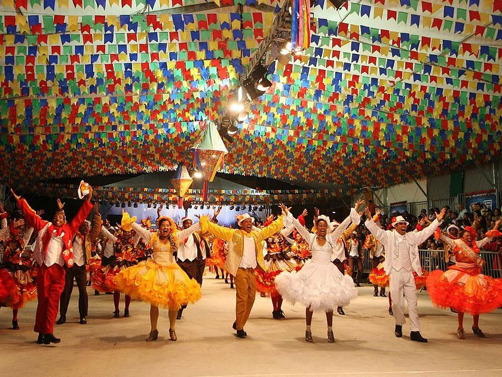

A Festa Junina é uma das celebrações mais tradicionais do Brasil, com raízes nas festas religiosas e populares, que acontecem principalmente no mês de junho. Originalmente, as festividades eram relacionadas aos santos João, Pedro e Antônio, mas ao longo dos anos a festa se transformou em uma grande celebração da cultura brasileira, especialmente nas regiões Nordeste e Norte.
A Festa Junina é uma celebração brasileira tradicional que ocorre em junho, com destaque para os santos São João, São Pedro e Santo Antônio. A festa é marcada por danças típicas como a quadrilha, comidas típicas como canjica e bolo de milho, fogueiras e decoração colorida com bandeirinhas. Também há brincadeiras e jogos divertidos, como a pesca de prêmios. É uma festa que mistura elementos religiosos e culturais do interior do Brasil, celebrando a alegria e as tradições rurais.
A Festa Junina tem origem nas tradições europeias de celebração dos solstícios de verão e foi adaptada pelos portugueses no Brasil, associando-se às festas católicas de São João, São Pedro e Santo Antônio. Com o tempo, incorporou elementos das culturas rurais, como as danças típicas (quadrilha), comidas com milho e amendoim, e o uso de fogueiras. Assim, a festa mistura influências religiosas, folclóricas e rurais, tornando-se uma celebração alegre e colorida, especialmente no Nordeste e no interior do Brasil.
As origens da Festa Junina remontam a tradições europeias, especialmente nas celebrações pagãs de origem celta, como o **Solstício de Verão**. Com a chegada dos colonizadores portugueses ao Brasil, a festa foi adaptada ao contexto local e passou a ser celebrada em homenagem aos santos católicos. - **São João**: Celebrado no dia 24 de junho, é o principal santo da festa. - **São Pedro**: Comemorado no dia 29 de junho. - **São Antônio**: Celebrado em 13 de junho, também figura como importante na festa.
Fogueiras: Têm origem nas tradições pagãs e simbolizam proteção e afastamento do mal. Quadrilha: Imita um casamento rural e é uma dança divertida com pares. Correio elegante: É uma brincadeira de enviar mensagens anônimas, muitas vezes de afeto. Comidas típicas: O milho é o ingrediente principal, simbolizando prosperidade e boa colheita. Roupas caipiras: Camisas xadrez e vestidos floridos representam a vida simples do campo. Simpatias de São João: Noite mágica para fazer desejos e simpatias, como pular fogueira. Festa no campo e na cidade: Enquanto no interior a festa é mais tradicional, nas grandes cidades é mais comercial e moderna. Essas curiosidades mostram a riqueza cultural e a diversão da festa!
Canjica: Milho branco cozido com leite de coco e leite condensado. Pamonha: Milho verde ralado, cozido na palha, podendo ser doce ou salgada. Curau: Creme de milho doce com leite e açúcar. Pipoca: Milho estourado, servido com manteiga, açúcar ou sal. Bolo de Milho: Bolo simples feito com milho verde. Pé-de-Moleque: Doce crocante de amendoim e açúcar. Cocada: Doce de coco ralado com açúcar. Arroz Doce: Sobremesa feita com arroz, leite e açúcar. Feijão Tropeiro: Feijão com arroz, linguiça, farinha de mandioca e ovo. Cuscuz: Feito com farinha de milho, podendo ser doce ou salgado. Quentão: Bebida quente de cachaça, gengibre, cravo e canela. Vinho Quente: Vinho com especiarias, consumido nas noites frias. Essas comidas são simples, saborosas e representam a tradição rural nas festas.

Durante as festas juninas, as pessoas se vestem com roupas típicas, geralmente de estilo **caipira**: - **Mulheres**: Usam vestidos floridos, chapéus de palha e maquiagem com "sardinhas" desenhadas no rosto. - **Homens**: Costumam usar camisas xadrez, suspensórios e chapéus de palha.
As danças mais populares da Festa Junina incluem a **quadrilha**, uma dança folclórica que simula um casamento caipira. Além disso, outras danças como o **baião** e o **xaxado** também são comuns, especialmente em festas no Nordeste do Brasil. Outro elemento essencial das festividades são as **fogueiras**, que simbolizam a purificação e a proteção contra os maus espíritos. A decoração com bandeirinhas coloridas e balões de papel também é característica da celebração.